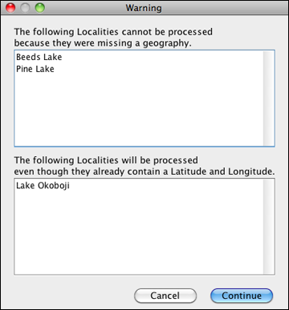
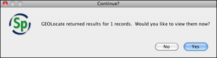
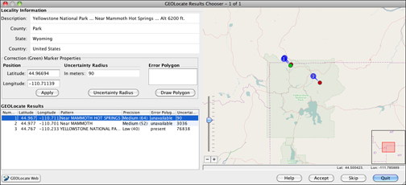

The GEOLocate project has created software and services for translating textual locality descriptions associated with biodiversity collections data into geographic coordinates. It uses a description of a Locality and values in geography fields, such as County, State and Country, to find Latitude and Longitude coordinate values. This is referred to as georeferencing.
The Specify and GEOLocate teams have collaborated to create a GEOLocate module inside Specify. In Specify 6.4 and newer GEOLocate has been upgraded to plugin version 2.0.
Notes:
Column Heading |
Data Needed |
| Locality Name | Yes |
| Country | Yes |
| State | Yes |
| County | No, but will improve results. Note: County is required when including waterbody and highway crossing in the GEOLocate search. |
| Latitude1 | No |
| Longitude1 | No (this is a results column) |
Column Heading |
Data Needed |
| Locality Name | Yes |
| Country | Yes |
| Child Node of Country | No, but will improve results. |
| Latitude1 | No |
| Longitude1 | No (this is a results column) |
Note: A complete list of acceptable countries is available on the GEOLocate website.
The GEOLocate tool uses the data present in the Locality Name, Country, State and County colunns to query the GEOLocate service. The service will not work without data in the Locality Name and at least two other columns. The Latitude 1 and Longitude 1 columns are needed to accept the data returned by the GEOLocate service. If GEOLocate is able to obtain results for any of the records, the GEOLocate Results Chooser dialog will display results for each Data Set record.
To use GEOLocate select one or more records in your Data Set and click the  button on the Work Space Item Bar. A message will alert you to the status of the GEOLocate search requirements in regard to your records.
button on the Work Space Item Bar. A message will alert you to the status of the GEOLocate search requirements in regard to your records.

GEOLocate Requirement Status
Note: Latitude and Longitude values present in WorkBench data sets will be replaced by those found in GEOLocate if GEOLocate results are accepted.
Once GEOLocate has finished processing another message will either display the number of records for which GEOLocate returned results, or state that no results were found.

View GEOLocate Results
Results will display in the GEOLocate Results Chooser tool.

GEOLocate
Locality Information displays the Locality Description, County, State and Country values in your current record.
Correction (Green) Marker Properties include the values for the most accurate result among the GEOLocate results returned. These values are also displayed visually on a map.
GEOLocate results can be edited using either the Correction Marker Properties form or the map elements. Changes made on the map are automatically recalculated and updated in the corresponding fields on the form. Updated values in the Correction Marker Properties form are automatically represented in the corresponding map element.
Note: As you move your mouse within the map the corresponding latituted and longitude values display in the lower right corner under the map.
Position represents the Latitude and Longitude of the GEOLocate result, visually depicted on the map as a green marker. These results can be edited.
Edit the Position using the Marker Properties form:
- Type new values in the Latitude and/or Longitude box.
- Click the Apply button to accept the changes and update the location of the green marker on the map.
Edit the Position using the map:
- Click on the green dot on the map and drag it to a new position. The latitude and/or longitude values on the form will automatically update.
Uncertainty Radius represents the error due to the uncertainty of the locality information provided. It is shown as a grey circle around the green point marker on the map. The Uncertainty Radius can also be edited.
Note: At this time in Specify the Uncertainty Radius values are not written in a Specify database field.
Edit the Uncertainty Radius using the Marker Properties form:
- Click the Uncertainty Radius button. The text box will change to accept numeric values, and a large arrow will appear on the map next to the Uncertaintly Radius point.
- Type a new numeric value into the box and click the Apply button to accept the changed value in the GEOLocate tool and update the Uncertainty Radius on the map.
Note: If GEOLocate does not find an Uncertainty Radius the text box will open ready to accept numerical values and the Apply button will be available.
Edit the Uncertaintly Radius using the map:
- Click the Uncertainty Radius button. The box will change to accept numeric values, and a large arrow will appear on the map next to the Uncertaintly Radius point.
- Click in the center of the arrow and drag to reset the Uncertainty Radius on the map as well as the numeric value in the form. As you move your mouse within the map the corresponding Uncertainty Radius, and latituted and longitude values display in the lower right corner under the map.
Note: If GEOLocate does not find an Uncertainty Radius the text box will open ready to accept numerical values and the Apply button will be available. You must type a value into the text box and click the Apply button before the arrow will appear on the map.
Error Polygon is a polygon which encompasses the entire area of uncertainty.
Results which include an Error Polygon will display the vertex values in the form and a red polygon on the map. Not all results include an Error Polygon. If the results do include an Error Polygon the vertex values in the form must be cleared by clicking the Clear Polygon button before the Error Polygon can be edited.
Note: At this time in Specify the Error Polygon values are not written in a Specify database field.
Edit the Error Polygon using the Marker Properties form:
- Click the Draw Polygon button. The box will change to accept numeric values. Type in latitude and longitude values, separated by a commas.
- Click the Apply button to accept the values in the GEOLocate tool and draw the polygon on the map.
Edit the Error Polygon using the map:
- Click the Draw Polygon button. A blue circle will appear around your mouse in the map area.
- Right-Click on the map to add a vertex point.
- Continue adding points until the polygon is complete.
- Double click on the last vertex point to finish the polygon and exit the draw polygon mode. The vertex values will be updated in the form.
OR, Right-click on the map to cancel the vertex and exit the draw polygon mode.
Note: If there are vertex values included in the Error Polygon field the values must be cleared by clicking the Clear Polygon button before new values can be entered or drawn on the map.
GEOLocate Results displays the GEOLocate results in grid form. If multiple results are returned they are numbered and sorted with the most accurate listed first. The active result is highlighted in blue on the form. Other GEOLocate results are represented by red markers on the map.
Click on either a record in the GEOLocate Results form or a red point on the map to make it the current, or active result. The fields in the Correction Marker Properties box will be filled in and the green marker will represent the current result until you manually make corrections.
- Number represents the order of GEOLocate returns both in the form and in a corresponding point on the map.
- Latitude represents the latitude to the hundredth degree.
- Longitude represents the longitude to the hundredth degree.
- Pattern, or pattern identifier, is a text description of the pattern or keyword used to determine a GEOLocate result. Single locality strings often include multiple patterns, producing multiple GEOLocate results.
- Precision is an indication of the quality of locality information. Each GEOLocate result is given a score between 0 and 100 which represents the probability of it being a match. That score is then placed within a 'low', 'medium' and 'high' ranking to indicate precision. Results are then ordered according to their probability number, which allows results within the same rank to include the most accurate matches first.
- Error Polygon is a polygon which encompasses the entire area of uncertainty.
- Uncertainty represents the error due to the uncertainty of the locality information provided.
Other Map Controls
Zoom In/Out
Slide the slider down to zoom in, up to zoom out.
Click the button to zoom in, the button to zoom out.
Turn the wheel on your mouse up to zoom in, down to zoom down.
Double click to zoom in, right-click to zoom out.
GEOLocate Web Button
Click the button to open the web-based version of GEOLocate in your default browser and plot the current result set on the map.
Other Buttons
Button Result Opens the Specify Help Window Stores the latitude and longitude values in the appropriate cells of the record. Ignores all results obtained for a given record, and displays the results for the next record. Accepts the currently selected row and closes the GEOLocate Results Chooser dialog.
The dialog will close when all the records have been displayed. Results that were accepted will be written in the Latitude 1 and Longitude 1 columns of the record. Any data already in these columns will be overwritten.
More information about GEOLocate can be found at http://www.museum.tulane.edu/geolocate/.